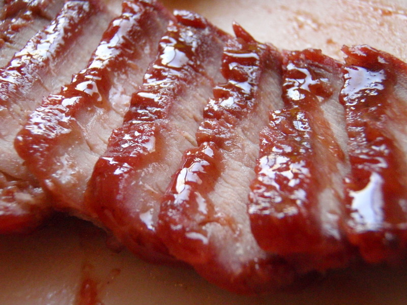

This is my favorite recipe because how easy it is to make and the taste is also amzing. The ingredients can be found at any supermarket. Char siu pork can be serve with rice or with stir-fried noodles, steamed bao buns, baked manapua, fried rice, and more!
Check out more recipes here playswellwithbutter.com
| Nutritional Facts | |
|---|---|
| Serves | 6 |
| Amount Per Serving | |
| Calories | 229 |
| % Daily Value* | |
| Total Fat 5.2g | 7% |
| Satured Fat 1.6g | |
| Trans Fat 0g | |
| Cholesterol 90.7mg | 30% |
| Sodium 443.2mg | 19% |
| Total Carbohydrate 9.3g | 3% |
| Dietary Fiber 0.2g | 1% |
| Sugars 8.3g | |
| Protein 34.6g | 69% |
| Vitamin A 0.1µg | 0% |
| Vitamin C 0mg | 0% |